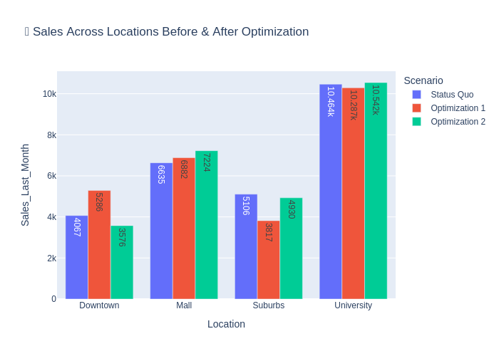
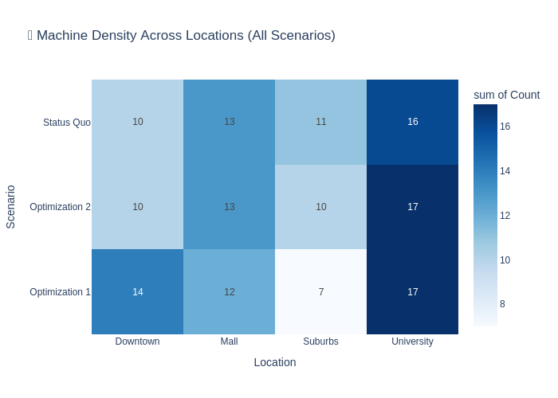
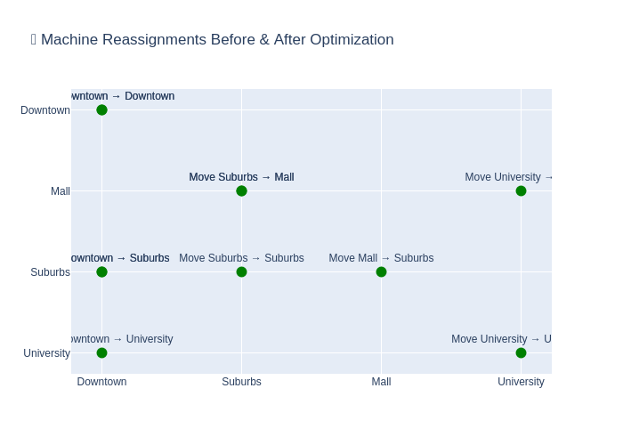

Optimizing Vending Machine Placement: An Overview
Vending machine placement optimization is part of a broader class of facility location problems, which aim to identify the best locations for facilities (e.g., machines, stores, or warehouses) within a given space. These problems are crucial for enhancing operational efficiency, reducing costs, and improving user experience. In this specific problem, the objective is to strategically place vending machines across multiple locations to maximize sales and minimize operational challenges, such as underutilization or high maintenance costs.
Understanding the Problem Through Optimization
In this problem, multiple optimization scenarios are explored to improve the placement of vending machines across various locations. The process starts with analyzing sales data to identify underperforming machines. Using K-means clustering, vending machines are grouped based on their sales performance, helping identify high- and low-performing locations. Underperforming machines are then moved to high-performing locations to boost overall sales.
The second phase of optimization incorporates moving costs and location constraints. For instance, each location has a capacity limit for the number of machines it can accommodate. A cost matrix is used to calculate the expenses associated with moving machines from one location to another. Linear sum assignment is then employed to find the optimal machine reassignment plan, ensuring that moves are cost-efficient and within location limits.
Visualization of Optimization Results
Sales Before & After Optimization (Bar Chart): This chart shows the sales across locations, comparing the status quo with the results from both optimization scenarios. It highlights the changes in sales and the improvements achieved after the machine reassignments.
Machine Density Heatmap: This heatmap visualizes the distribution of vending machines across locations and scenarios, providing insights into how the machine placement changes after optimization.
Machine Reassignments (Network Diagram): This diagram illustrates the specific moves of vending machines from underperforming locations to high-performing ones. The edges represent the moves, providing a clear view of the reassignments.